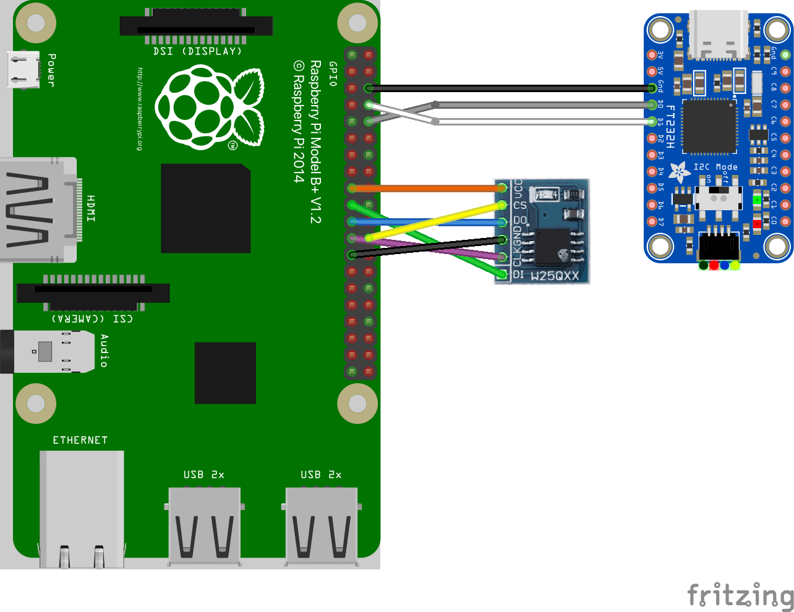
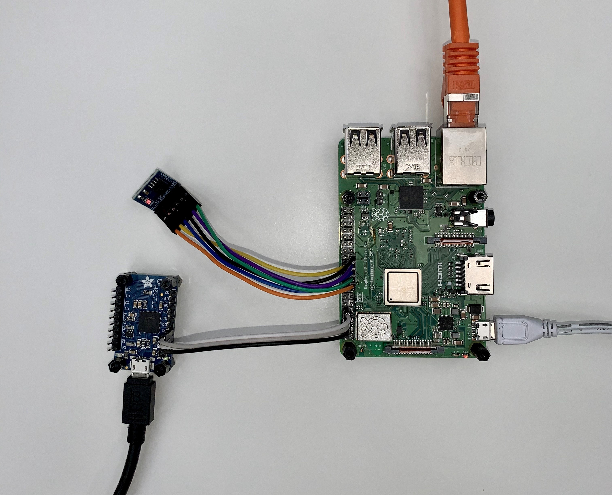
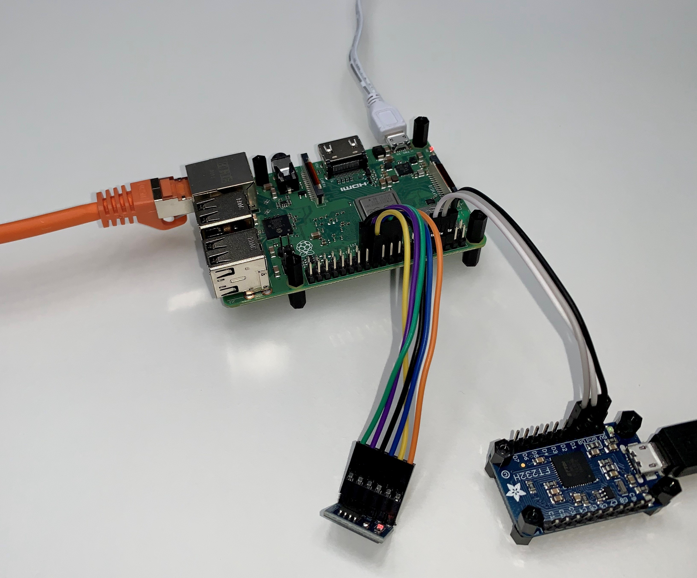

RPi_SPI_Flash¶
Overview¶
The RPi_SPI_Flash component implements a driver of a NOR flash device connected to the Raspberry Pi’s SPI interface.
The driver uses 3rd party libraries to access BCM2837’s SPI peripheral and the W25Q64 NOR flash.
The driver provides the TRENTOS Storage Interface on the top, which can be used directly by applications or the StorageServer component to partition it for multiple applications.
Any partition layout on top of the flash driver must be aligned on 4 KiB boundaries, as this is the flash erase block granularity.
Flash storage does not support random write access and the driver does not emulate this.
Writing can only change bits from 1 to 0. Turning bits from 0 to 1 using the write command does not work and is ignored. The only way of turning bits into a 1 again is by performing an erase operation, but this works on whole 4 KiB blocks only.
Flash-aware file systems (e.g. SPIFFS) can handle this and thus can be used on top of the flash driver (or partitions) directly through the Storage Interface.
Non-flash aware file systems (e.g. FAT) that don’t issue erase commands must use a helper layer, which issues the necessary erase command before writing. In general, using non-flash aware file systems on flash is not recommended.
flowchart TB
%% TRENTOS on RPi3 Frame
subgraph TRENTOS_on_RPi3["TRENTOS on RPi3"]
subgraph system["Custom TRENTOS System"]
end
subgraph Storage_Driver["Storage Driver"]
Storage_Flash_SPI["RPi_SPI_Flash Driver"]
bcm2837_spi_lib["BCM2837 SPI library"]
spi_flash_lib["Flash library"]
Storage_Flash_SPI --- spi_flash_lib
Storage_Flash_SPI --- bcm2837_spi_lib
end
TimeServer("Time Server")
TimeServer --- Storage_Flash_SPI
system -- "Storage\nInterface\n\n" --- Storage_Flash_SPI
system -- "TimeServer\nInterface" --- TimeServer
Storage_Flash_SPI -- "TimeServer\nInterface\n" --- TimeServer
end
%% RPi3 Hardware Frame
subgraph RPi3_Hardware["RPi3 Hardware"]
Timer("Timer")
SPI("SPI")
TimeServer -.- Timer
bcm2837_spi_lib -.- SPI
end
%% W25Qxx Flash Node
Flash("W25Qxx Flash")
SPI -.- Flash
Storage Interface Implementation¶
The driver implementation of the Storage Interface must be used with the following conditions.
The driver implementation does not impose any limitation on the sizes of the read and write requests or on the used offset. Nevertheless, the limitation exists and comes from the size of the data port (shared memory) between the driver and the component accessing it. The maximum data port size is 4096 bytes as defined in CAmkES. For more information on this topic, revisit the seL4 Microkernel and the CAmkES Framework chapter.
Write requests will internally be split into flash accesses aligned on the 256 byte pages.
Erase request must be aligned on 4096 byte offsets and cover a multiple of 4096 bytes.
Reading, writing and erasing are blocking calls. The driver implements the timeouts by using the worst case timing values stated in the W25Q64 datasheet for each command. Waiting is implemented using the TimeServer for sleeping, thus CPU time is available for other system components while waiting.
Limitations¶
The driver is not optimized for high data throughput and does not implement any caching.
Since hard-coded worst-case timeouts for certain SPI transactions are used, the flash’s state registers are not checked to see if the command has been completed.
SPI commands are transmitted using an SPI peripheral’s FIFO. If the FIFO is full, busy waiting is used to send or receive further bytes. Effectively, send/receive speed is then determined by the SPI clock, which is set up with a divider of factor 8. Based on a 250 MHz peripheral clock, this gives 31.25 MHz SPI speed, which is well below the flash’s maximum ratings.
The driver does not check if the flash is really connected. An application should implement probing on startup to verify the flash is accessible and the expected content is present. A non-connected flash will usually be perceived as if all bits are set to 1.
The driver expects the flash to be connected at SPI0, but it maps 32 KiB I/O memory at 0x3F200000. The SPI peripheral registers are in this area, but other I/O peripherals are also. Due to implementation limitations, mapping can’t be more fine-grained.
Flash parameters are hard-coded in the source for a W25Q64 flash, which provides 64 Mibit (8 MiB) storage space. Accesses out of this range will result in an error.
Hardware¶
Raspberry Pi SPI Interfaces¶
General information regarding SPI usage on the RPi can be found in the official RPi SPI documentation: https://www.raspberrypi.org/documentation/hardware/raspberrypi/spi/README.md
In order to be able to use the SPI, a potential device has to be connected and wired to the respective pins accordingly. See also https://www.raspberrypi.org/documentation/usage/gpio or https://pinout.xyz/pinout/spi for the assignment. Note that the numbering on the 2x20 GPIO pin headers is different to the BCM2837 SoC’s internal I/O numbering. The documentation often refers to the SoC’s internal I/O signals when describing the I/O functions, but for actually connecting wires and peripherals physically, referring to the 2x20 GPIO headers is more practical.
Signal |
RPi GPIO 2x20 Pin Header |
BCM2837 SoC internal I/O |
|
|---|---|---|---|
SPI0 |
MOSI |
19 |
10 |
MISO |
21 |
9 |
|
SCLK |
23 |
11 |
|
CE0 |
24 |
8 |
|
CE1 |
26 |
7 |
|
SPI1 |
MOSI |
38 |
20 |
MISO |
35 |
19 |
|
SCLK |
40 |
21 |
|
CE0 |
12 |
18 |
|
CE1 |
11 |
17 |
|
CE2 |
36 |
16 |
W25Q64 Flash SPI Interface¶
In order to use an SPI based flash memory, the respective device has to be wired to the RPi first. Exemplary, the respective mapping for a Winbond W25Q64 chip with 64 Mibit (8 MiB) capacity connected at SPI0 is shown in the table below:
W25Q64 Pin |
Wire Color |
RPi GPIO 2x20 Pin Header |
RPi Signal |
|---|---|---|---|
VCC |
orange |
17 |
VCC (3.3V) |
D1 |
green |
19 |
SPI0 MOSI |
D0 |
blue |
21 |
SPI0 MISO |
CLK |
violet |
23 |
SPI0 SCLK |
CS |
yellow |
24 |
SPI0 CE0 |
GND |
black |
25 |
GND |
The following images show the flash board (the smaller one, located on top left in the first figure) connected to Raspberry Pi.
 RPi_SPI_Flash - Hardware Setup Illustration
 RPi_SPI_Flash - Hardware Setup Top
 RPi_SPI_Flash - Hardware Setup Side
Usage¶
This is how the component can be instantiated in the system.
Declaration of the Component in CMake¶
The RPi_SPI_Flash can be instantiated via the following:
RPi_SPI_Flash_DeclareCAmkESComponent(
<NameOfComponent>
LIBS
<NameOfTimeServerComponent>_client
)
Instantiation and Configuration in CAmkES¶
Here we show how to instantiate the RPi_SPI_Flash component.
Declaring the Component¶
Internally, the RPi_SPI_Flash is decomposed in two components:
flash driver component
HW component specific for the RPi
The declaration of the SPI flash driver has to set up both and works as follows:
#include "RPi_SPI_Flash/RPi_SPI_Flash.camkes"
RPi_SPI_Flash_COMPONENT_DEFINE(<NameOfComponent>)
RPi_SPI_Flash_HW_COMPONENT_DEFINE(<NameOfHWComponent>)
Please note that the name of the driver component must match the name used in the CMake file.
Instantiating and Connecting the Component¶
To instantiate the driver, it needs to be connected to an instance of the HW component:
component <NameOfComponent> <nameOfInstance>;
component <NameOfHWComponent> <nameOfHWInstance>;
RPi_SPI_Flash_INSTANCE_CONNECT(
<nameOfInstance>,
<nameOfHWInstance>
)
Then, a client can be connected via the if_OS_Storage interface:
RPi_SPI_Flash_INSTANCE_CONNECT_CLIENT(
<nameOfInstance>,
<client>.<storage_rpc>, <client>.<storage_port>
)
Configuring the Instance¶
The HW component part of the SPI flash driver has to be configured accordingly before usage within a TRENTOS system environment:
RPi_SPI_Flash_HW_INSTANCE_CONFIGURE_SELF(
<nameOfHWInstance>
)
Example¶
Here we see how to use the RPi_SPI_Flash driver.
Instantiation of the Component in CMake¶
The driver can simply be added to the build like this:
RPi_SPI_Flash_DeclareCAmkESComponent(
RPi_SPI_Flash
LIBS
TimeServer_client
)
Instantiation and Configuration in CAmkES¶
In this example, the component is connected to a second component which uses the file system.
Declaring the Component¶
The RPi_SPI_Flash (and HW) driver can be declared as follows:
#include "RPi_SPI_Flash/RPi_SPI_Flash.camkes"
RPi_SPI_Flash_COMPONENT_DEFINE(RPi_SPI_Flash)
RPi_SPI_Flash_HW_COMPONENT_DEFINE(RPi_SPI_Flash_HW)
Instantiating and Connecting the Component¶
To connect the RPi_SPI_Flash driver internally and then to a client via the
if_OS_Storage interface:
// Instantiate HW and driver component
component RPi_SPI_Flash flash;
component RPi_SPI_Flash_HW flash_hw;
// Set up client
component Client client;
// Connect interface USED by driver
RPi_SPI_Flash_INSTANCE_CONNECT(
flash,
flash_hw
)
// Connect interface PROVIDED by driver
RPi_SPI_Flash_INSTANCE_CONNECT_CLIENT(
flash,
client.storage_rpc, client.storage_port
)
Configuring the Component¶
With the code below, the HW instances configures itself for use on the RPi:
RPi_SPI_Flash_HW_INSTANCE_CONFIGURE_SELF(
flash_hw
)
Using the Component’s Interfaces in C¶
Below is some example code, how the file system can be instantiated with the RPi_SPI_Flash component (assuming the RPC endpoints are assigned as described above):
// For FileSystem functionality
#include "OS_FileSystem.h"
// For the CAmkES generated interface
#include <camkes.h>
static OS_FileSystem_Config_t cfg =
{
.type = OS_FileSystem_Type_FATFS,
.storage = IF_OS_STORAGE_ASSIGN(
storage_rpc,
storage_port),
};
...
int run() {
...
OS_FileSystem_init(&hFs, &cfg);
...
}